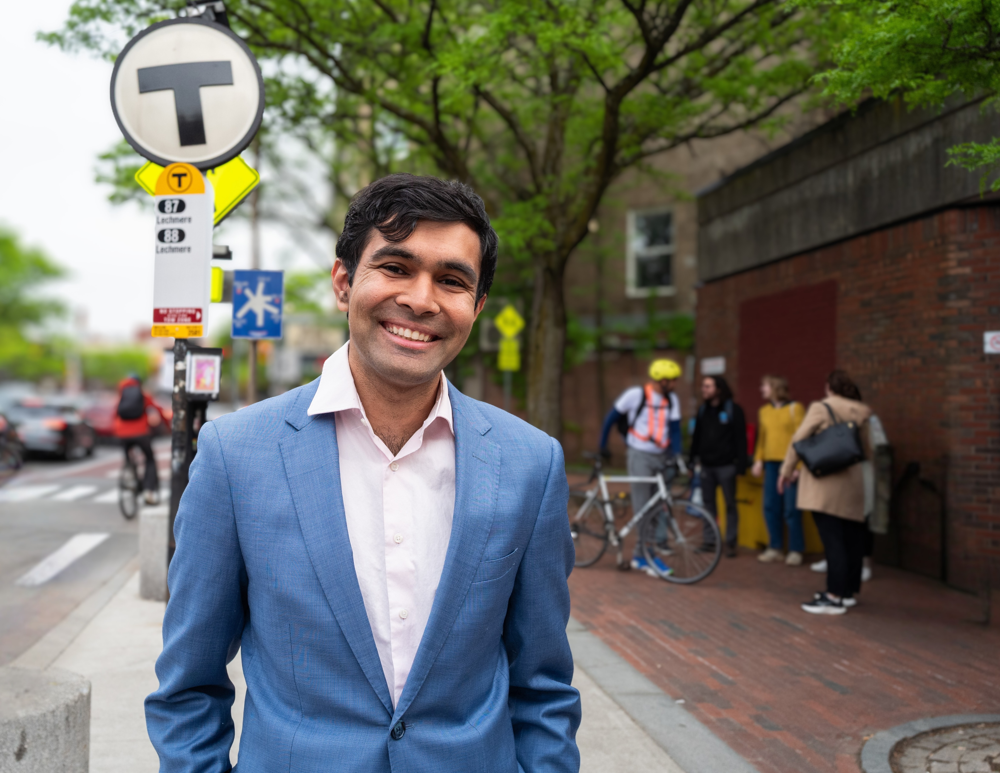

<!DOCTYPE html>
<html lang="en">
<head>
<meta charset="utf-8">
<meta name="viewport" content="width=device-width, initial-scale=1">
<title>Burhan for Senate — Receipts</title>
<link rel="stylesheet" href="project/site/site.css">
</head>
<body>
<div id="root"></div>

<script src="https://unpkg.com/react@18.3.1/umd/react.development.js" integrity="sha384-hD6/rw4ppMLGNu3tX5cjIb+uRZ7UkRJ6BPkLpg4hAu/6onKUg4lLsHAs9EBPT82L" crossorigin="anonymous"></script>
<script src="https://unpkg.com/react-dom@18.3.1/umd/react-dom.development.js" integrity="sha384-u6aeetuaXnQ38mYT8rp6sbXaQe3NL9t+IBXmnYxwkUI2Hw4bsp2Wvmx4yRQF1uAm" crossorigin="anonymous"></script>
<script src="https://unpkg.com/@babel/standalone@7.29.0/babel.min.js" integrity="sha384-m08KidiNqLdpJqLq95G/LEi8Qvjl/xUYll3QILypMoQ65QorJ9Lvtp2RXYGBFj1y" crossorigin="anonymous"></script>

<script type="text/babel" src="project/site/tweaks-panel.jsx"></script>
<script type="text/babel" src="project/site/shared.jsx"></script>
<script type="text/babel" src="project/site/receipts.jsx"></script>

<script type="text/babel">

const REC_DEFAULTS = /*EDITMODE-BEGIN*/{
  "timeline": "Vertical",
  "clips": "Collage"
} /*EDITMODE-END*/;

function ReceiptsApp() {
  const [t, setTweak] = useTweaks(REC_DEFAULTS);
  return (
    <div className="site">
      <SiteHeader active="Receipts" />

      <section className="page-hero motif-bg">
        <Reveal className="page-hero-grid">
          <div className="page-hero-text">
            <span className="kicker">The receipts</span>
            <h1>Burhan's Record</h1>
            <p>Burhan Azeem is a renter, a transit rider, and the Vice Mayor of Cambridge who has a track record of turning big promises into real legislation.</p>
            <p style={{ marginTop: 18 }}>Growing up, his family relied on Medicaid and food stamps, which taught him early on that government can change lives for the better. He went on to earn a full scholarship to MIT, become an EMT, and co-founded a healthcare company.</p>
            <p style={{ marginTop: 18 }}>After finding it nearly impossibile to find an affordable apartment, Burhan ran for office. In four years on the Cambridge City Council, he re-legalized multifamily housing, delivered universal pre-K, and created historic transparency.</p>
            <p style={{ marginTop: 18 }}>He&rsquo;s running for State Senate to scale what worked in Cambridge to the whole district: more housing, a faster T, and a Statehouse that actually delivers.</p>
          </div>
          <div className="page-hero-photo">
            
          </div>
        </Reveal>
      </section>

      <ReceiptsBody timeline={t.timeline} clips={t.clips} />

      <SiteFooter headline="And this is just the beginning." sub="Help send a proven problem-solver to the State Senate." />

      <TweaksPanel>
        <TweakSection label="Timeline" />
        <TweakRadio label="Orientation" value={t.timeline}
        options={["Horizontal", "Vertical"]}
        onChange={(v) => setTweak("timeline", v)} />
        <TweakSection label="Press clippings" />
        <TweakRadio label="Layout" value={t.clips}
        options={["Collage", "Clean grid"]}
        onChange={(v) => setTweak("clips", v)} />
      </TweaksPanel>
    </div>);

}
ReactDOM.createRoot(document.getElementById("root")).render(<ReceiptsApp />);
</script>
</body>
</html>
